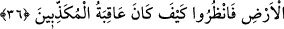
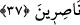

istemediklerine bakmaksızın sözlerini onlar üzerinde infaz etmek değildir.
36. Andolsun ki biz, “Allah’a kulluk edin ve tâğuttan sakının” diye (emretmeleri
için) her ümmete bir peygamber gönderdik. Allah, onlardan bir kısmını doğru yola
iletti. Onlardan bir kısmı da sapıklığı hak ettiler. Yeryüzünde gezin de görün, inkâr
edenlerin sonu nasıl olmuştur!
“Andolsun ki biz,” her peygamberin lisanıyla: “Yalnız “Allah’a kulluk edin ve
tâğuttan” şeytandan ve sapıklığa çağıran her şeyden “sakının” diye” emretmeleri için
seni gönderdiğimiz gibi “her ümmete” kendilerine özel “bir peygamber gönderdik.”
Allah’ın, onlardan bir kısmının îmân edip bir kısmının îmân etmeyeceğini bildiği
halde peygamber göndermesi, sâdece onların âhiretteki mâzeretlerini ortadan kaldırmak
ve öne sürecekleri delilleri karşısında onları susturmak içindir.
Peygamberler kendilerine gönderilen sâdece Allah’a ibâdet etme ve tâğuttan sakınma
emrini tebliğ ettiler. İnsanlar ise, fırkalara ayrıldılar. “Allah, onlardan bir kısmını”
yâni bu ümmetlerden bir kısmını “doğru yola iletti.” Onların cüz’î ihtiyarlarını ve
kudretlerini îmanı tahsîle yönelttikten sonra kendilerinde Hakk’a ibâdet ve putlardan
kaçınma hidâyetini yarattı.
“Onlardan bir kısmı da” ilâhî yardımın kesilmesi sebebiyle “sapıklığı hak ettiler.”
Böyle bir kimse, dalâlet üzerinde inâd ve ısrâr edip bundan kendisini men
etmemesinden dolayı, ölümüne kadar bu hâl onun üzerinde devam etmiş ve artık
sâbitleşmiştir. İşte bu yüzden Allah Teâlâ, böyle insanlarda hidâyeti yaratmamış ve
kalplerinin şirkten temizlenmesini de murâd etmemiştir.
Ey Kureyş topluluğu, “yeryüzünde gezin de görün, inkâr edenlerin sonu nasıl
olmuştur!” Sapıklığın üzerlerine hak olduğu Âd, Semûd ve onların yolunu tâkip eden
diğer kavimler gibi peygamberleri yalanlayanların sonunun ne olduğunu bir görün.
Onların yerlerini, diyarlarını ve azab izlerini görünce belki ibret alırsınız.
37. (Rasûlüm!) Sen, onların hidâyete ermelerine çok düşkünlük göstersen de bil
ki Allah, saptırdığı kimseyi (dilemezse) hidâyete erdirmez. Onların yardımcıları da